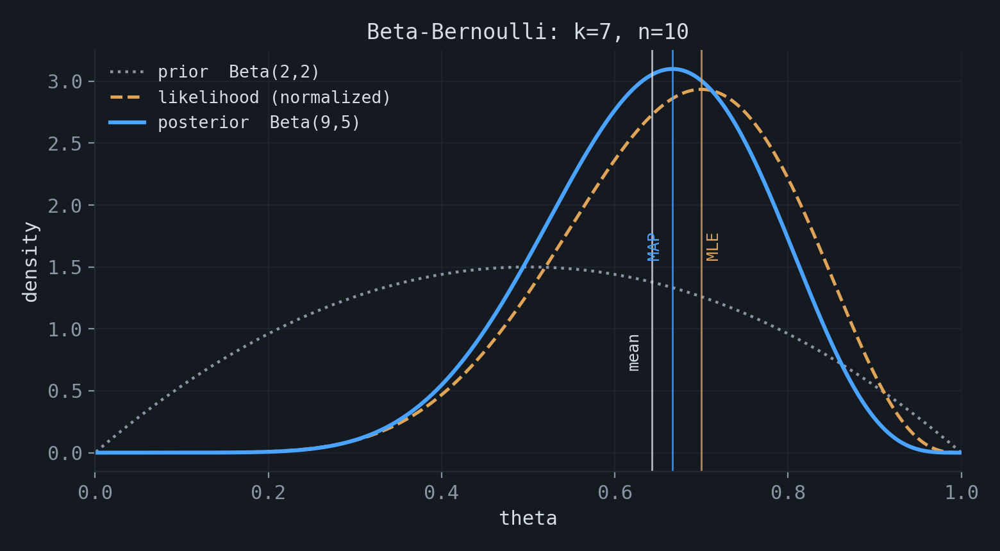
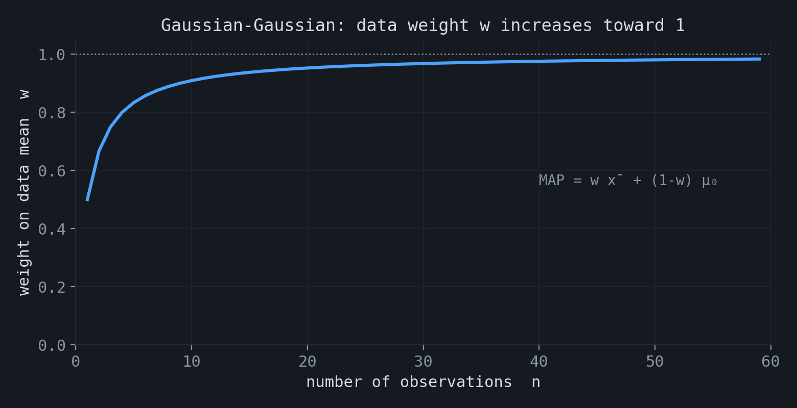
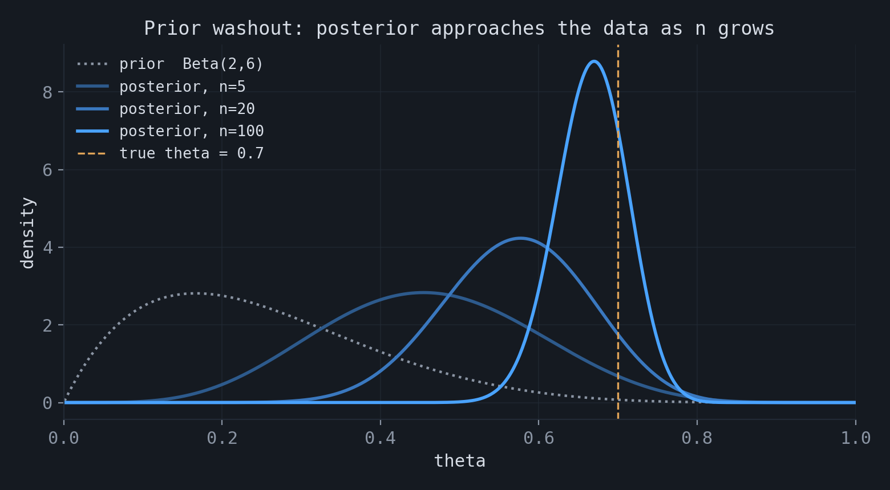
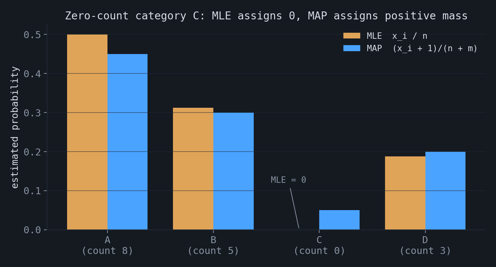

Maximum likelihood and maximum a posteriori
Maximum likelihood estimation (MLE) and maximum a posteriori estimation (MAP) are the two standard methods for fitting the parameters of a probabilistic model. They differ in one component: MAP introduces a prior distribution over the parameters, and MLE does not. This post states both estimators, works through standard examples, describes how they relate as the sample size increases, and examines the zero-count problem that arises when MLE is applied to categorical data.
1.Maximum likelihood estimation
Let $D = \{x_1, \dots, x_n\}$ be observations drawn independently from a model $p(x; \theta)$ with parameter $\theta$. The likelihood of the data is the product of the per-observation densities, and the log-likelihood is the corresponding sum:
$$ \ell(\theta) = \sum_{i=1}^{n} \log p(x_i; \theta). $$The maximum likelihood estimate is the parameter that maximizes this quantity, $\hat\theta_{\text{MLE}} = \arg\max_\theta \ell(\theta)$. At an interior maximum the gradient is zero, which gives the estimating equation
$$ \sum_{i=1}^{n} \nabla_\theta \log p(x_i; \theta) = 0. $$For $n$ Bernoulli trials with $k$ successes, the log-likelihood is $\ell(\theta) = k \log \theta + (n-k)\log(1-\theta)$. Setting its derivative to zero gives $\hat\theta_{\text{MLE}} = k/n$, the observed frequency. This is the estimator behind the cross-entropy objective discussed in the previous post. For observations from a Poisson distribution with rate $\lambda$, the same procedure gives $\hat\lambda_{\text{MLE}} = \bar{x}$, the sample mean.
Under standard regularity conditions the MLE has two properties used throughout. It is consistent and asymptotically normal,
$$ \sqrt{n}\,(\hat\theta - \theta_0) \xrightarrow{d} N\!\big(0,\, I_1(\theta_0)^{-1}\big), $$where $I_1$ is the Fisher information of a single observation, and its asymptotic variance attains the Cramér–Rao lower bound. It is also invariant under reparameterization: if $\hat\theta$ is the MLE of $\theta$, then $g(\hat\theta)$ is the MLE of $g(\theta)$.
2.Maximum a posteriori estimation
Maximum a posteriori estimation treats $\theta$ as a random variable with a prior distribution $p(\theta)$. By Bayes' rule the posterior is proportional to the product of the likelihood and the prior, $p(\theta \mid D) \propto p(D \mid \theta)\, p(\theta)$. The MAP estimate is the posterior mode:
$$ \hat\theta_{\text{MAP}} = \arg\max_\theta \big[\ell(\theta) + \log p(\theta)\big] = \arg\min_\theta \big[-\ell(\theta) - \log p(\theta)\big]. $$Compared with MLE, the only additional term is $-\log p(\theta)$, which acts as a regularizer. A Gaussian prior $\theta \sim N(0, \tau^2 I)$ contributes a term proportional to $\|\theta\|_2^2$, which is ridge ($\ell_2$) regularization. A Laplace prior contributes a term proportional to $\|\theta\|_1$, which is Lasso ($\ell_1$) regularization.
As an example, consider again $k$ successes in $n$ Bernoulli trials, now with a $\text{Beta}(\alpha,\beta)$ prior on $\theta$. The Beta family is conjugate to the Bernoulli likelihood, so the posterior is again a Beta distribution, $\text{Beta}(k+\alpha,\, n-k+\beta)$. The MLE, the MAP mode, and the posterior mean are
$$ \hat\theta_{\text{MLE}} = \frac{k}{n}, \qquad \hat\theta_{\text{MAP}} = \frac{k+\alpha-1}{n+\alpha+\beta-2}, \qquad \mathbb{E}[\theta \mid D] = \frac{k+\alpha}{n+\alpha+\beta}. $$
Interactive demo — needs JavaScript.
With a uniform prior ($\alpha=\beta=1$) the penalty term is constant and the MAP mode coincides with the MLE. A second standard case is the Gaussian model: for $x_1,\dots,x_n \sim N(\mu, \sigma^2)$ with known $\sigma^2$ and prior $\mu \sim N(\mu_0, \tau^2)$, the posterior is Gaussian and its mode equals its mean,
$$ \hat\mu_{\text{MAP}} = w\,\bar{x} + (1-w)\,\mu_0, \qquad w = \frac{n/\sigma^2}{n/\sigma^2 + 1/\tau^2}. $$The estimate is a precision-weighted average of the sample mean and the prior mean. As $n$ increases, $w$ approaches $1$ and the estimate approaches the sample mean.

3.Relationship as the sample grows
The two estimators differ only through the prior term, and its role diminishes as data accumulate. In the MAP estimating equation
$$ \nabla \ell(\theta) + \nabla \log p(\theta) = 0, $$the first term is a sum of $n$ contributions and grows on the order of $n$, while the second does not depend on $n$. As $n$ increases the prior term becomes negligible relative to the data term, and the MAP estimate approaches the MLE; the difference is of order $1/n$. A flat prior makes the two estimators coincide for every sample size.

4.The zero-count problem
Categorical data exposes a concrete failure of the MLE. Let $(x_1, \dots, x_m)$ be the counts of $m$ categories with $\sum_i x_i = n$. The MLE is the vector of observed frequencies, $\hat\pi_i = x_i/n$. Any category that does not appear in the sample receives $\hat\pi_i = 0$.
A zero estimate is not only imprecise. If a later observation falls in a category that was assigned probability zero, the likelihood of that observation is zero and its negative log-likelihood is infinite. A single unseen category therefore causes the model to assign zero probability to any sequence that contains it. In language modeling this corresponds to infinite perplexity from one unseen token.
MAP estimation removes the zero. With a $\text{Dirichlet}(\alpha)$ prior the posterior is $\text{Dirichlet}(x_i + \alpha_i)$, and the MAP estimate is
$$ \hat\pi_i^{\text{MAP}} = \frac{x_i + \alpha_i - 1}{n + \sum_j (\alpha_j - 1)}. $$For $\alpha_i > 1$ this is strictly positive even when $x_i = 0$. The symmetric choice $\alpha_i = 2$ gives $\hat\pi_i = (x_i + 1)/(n + m)$, which is add-one (Laplace) smoothing. The prior assigns a small amount of probability to categories that the sample has not produced.

5.Reparameterization
One property of the MLE does not carry over to MAP. A probability density transforms with a Jacobian factor under a change of variables, and the location of a mode is not preserved by that factor. Consequently, if $\hat\theta_{\text{MAP}}$ is the MAP estimate of $\theta$, then $g(\hat\theta_{\text{MAP}})$ is in general not the MAP estimate of $g(\theta)$. The MLE depends on the likelihood rather than on a density in $\theta$, so it does not depend on the choice of parameterization.
★Summary
| Aspect | MLE | MAP |
|---|---|---|
| Objective | maximize $\ell(\theta)$ | maximize $\ell(\theta) + \log p(\theta)$ |
| Prior | none | explicit prior $p(\theta)$ |
| Regularization | none | $-\log p(\theta)$; Gaussian gives $\ell_2$, Laplace gives $\ell_1$ |
| Large samples | limiting estimator | approaches MLE; difference of order $1/n$ |
| Reparameterization | invariant | not invariant |
| Zero counts | assigns probability zero | assigns positive probability |
The accompanying notebook contains numerical illustrations of these results: the Bernoulli log-likelihood and its convergence, the Beta-Bernoulli posterior, prior washout as $n$ grows, Gaussian shrinkage, and the zero-count problem with its Dirichlet correction: experiments.ipynb.